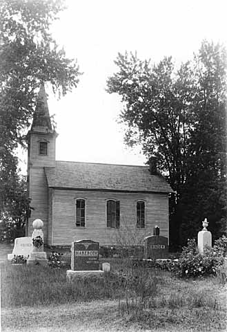
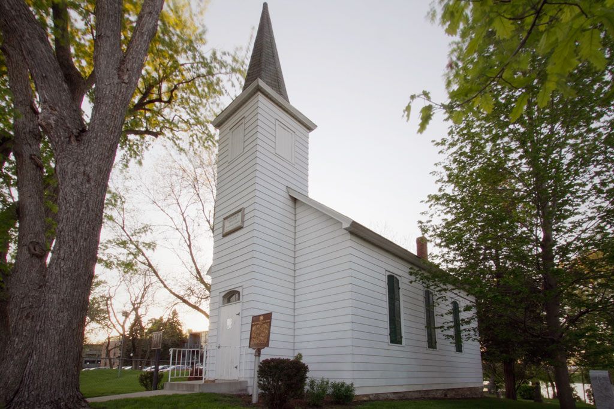

History
In 1855 several German immigrant families left St. Jacobs, Ontario, Canada for Minnesota. These families were members of the Evangelical Church in Canada and shortly after settling in Minnesota they requested that the Evangelical Church in Canada send a pastor to Minnesota. In November, 1856, Andrew Tarnutzer, the first Evangelical minister in Minnesota, arrived in Winona, Minnesota and by February, 1857, he arrived in St. Paul. On March 2, 1857, Rev. Tarnutzer organized the first Evangelical class of members of the Evangelical Association in America, which became known as the Salem Evangelical Church.
From 1857 until 1874, a small building across the road from its present site was the place of worship. This small frame building had siding that ran up and down, two windows, one door, and several wooden benches. In 1874 H. E. Bunse became pastor to both Emanuel Evangelical Church at Pine and 11th Evangelical Church. Rev. Bunse began construction of the current building on farm land donated by the one of the original families from Germany. The church measures 20 feet six inches by 32 feet six inches, has a hall or tower entrance of five feet by seven feet, and measures fourteen feet from the stone foundation to the eaves with a tower of approximately 30 feet. Farmers and people in the neighborhood helped in the construction. Before the present building was completed, Rev. Bunse was elected presiding elder of Emanuel Evangelical Church. Rev. Ernest Hielscher was assigned to Salem Evangelical Church.
The first camp meeting was held on a neighboring farm between July 1st 1857. It was reported that there were seven tents erected, two covered wagons, and that there were nine conversions. The second camp meeting was held in 1858 and there were thirteen conversions. These 22 conversions, along with the original families, comprised the charter members. Among the first members of the Salem Kirche, were: Michael Gackstetter, Adam Laschinger, Jacob Binder, Jacob Bosshardt, George Glassing, Frederick Goldberg, Frederick Wm. Goldberg, C. F. Kachel, John Kochendorfer, Heinrich Schafer, Gottfried Schmidt, John Simon, and Frederick Zehnder.
Old Salem circa 1936
Salem Evangelical Church held continuous worship services until 1910, at which time most of its families migrated to the Winifred Street Church (now Faith United Methodist Church in West St. Paul), with some of the families moving to the West Side Community Church (now a part of St. Paul’s United Methodist Church in Mendota Heights) and the Zion Methodist Episcopal Church down the road (now Salem United Methodist Church). After its closing, ownership was continued as a historical site by the Evangelical church formed in 1922, by the Evangelical United Brethren church formed in 1946, and lastly by the United Methodist church formed in 1968. Until the late 1960’s when Dakota County renamed streets this road was known as Salem Church Road. It remains the only street in Dakota County to have two historic churches, both named Salem on the same road. Salem Church Road still exists within the boundaries of the City of Sunfish Lake.
After 1910, the church building and cemetery fell into disrepair. In the 1930’s a group of interested people organized a committee to provide for the care and upkeep of the building and cemetery grounds. Arthur Schlukebier was elected president and Christian J. Zehnder became secretary-treasurer. In 1976, Old Salem Shrine, as it has become known, became an Historic Site of the United Methodist Church. An ongoing committee continues today comprised of 16 members, primarily descendants of the original founders.
Old Salem in 2013
Since 1955 the committee has held an Annual Founder’s Day service on the first Sunday in June, and in 1998 began an Epiphany Service on the first Sunday in January. The potbelly wood-burning stove is used to heat the building for winter events. The original pump organ is still in the church and used at these worship services. Each year there are weddings, family reunions, tours, and other special occasions held at the church. The church building, cemetery, and the grounds capture the local color of a rural atmosphere and a sense of heritage of pioneer courage and steadfast faith in God. The church and adjoining cemetery reveal a great deal about the history of Dakota County, MN between the 1700s and the present.
Cemetery
Please feel free to contact Jill Lewis with any questions about the cemetery.
- Anderson, Nels A., born 3/13/1905, died 4/8/1968
- Aszmann, Conrad Albrecht, born 12/24/1886, died 12/10/1894
- Aszmann, Mary Frances (Hoppe), born 11/24/1867, died 5/26/1895
- Aszmann, William, born 8/31/1897, died 9/7/1897
- Aszmann, William, age 3, died 11/1/1894
- Bauman, Mildred C., died 9/19/1990
- Baumann, Willis E., born 3/18/1905, died 8/13/1971
- Benke, Johanna (Johanna Carolina Frederike), born 9/30/1861, died 3/31/1905
- Berryman, Charles, died 10/15/1979
- Berryman, Juanita Zehnder, died 5/10/2000
- Binder, Barbara, born 6/17/1836, died 3/29/1902
- Binder, Jacob, born 1/6/1905, died 3/28/2005
- Binder, John, born 4/1/1868, died 3/28/1882
- Binder, William, born 11/26/1871, died 7/23/1884
- Bosshardt, George, born 1873, died 5/3/1887
- Bosshardt, M. William, Age 23, died 12/19/1899
- Brotzler, Charles, died 10/2/1984
- Brotzler, Charles, died 6/8/2007
- Brotzler, Christina, born 8/7/1901, died 8/12/1902
- Brotzler, Clara Louise, died 2/3/1985
- Brotzler, Frederick, born 3/10/1905, died 12/13/1976
- Brotzler, Herman Paul, born 11/30/1899, died 3/14/2005
- Brotzler, Jacob, born 3/16/1900, died 3/1/1939
- Brotzler, Margaret, born 12/27/1868, died 3/13/1971
- Calk, Anna, born 2/3/1902, died 10/27/1891
- Constadt, Franzisla Frederika, born 10/7/1888, died 2/18/1889
- Ellinger, Alma Emma, died 7/5/1956
- Ellinger, Christoph, born 3/2/1896, died 3/2/1896
- Ellinger, Christoph, born 3/6/1897, died 3/6/1897
- Ellinger, Christoph, born 4/24/1905, died 4/24/1905
- Ellinger, Christoph, born 6/3/1849, child
- Ellinger, Christopher C. George, died 3/11/1955
- Ellinger, Magdeline, Age 55, died 3/11/1927
- Elvers, Lawrence, born 2/7/1915, died 2/15/1980
- Elvers, Lucille Kurth, 93 years, died 5/4/2014
- Engel, Bertha, born 6/26/1844, died 11/25/1889
- Engel, George, Age 14 mos., died 7/14/1901
- Engel, Matthew, born 1/1/1834, died 5/2/1901
- Faulk, George, born 2/25/1884, died 6/26/1890
- Felland, Arline Lick, born 3/22/1905, died 4/6/2006
- Foster, Henry, died 7/19/1886
- Glassing, Adeline, born 3/30/1905, died 2/25/1920
- Glassing, Anna, born 2/28/1905, died 4/3/1905
- Glassing, Bernice O Newhouse, died 10/5/2012
- Glassing, Frederick Louis, born 8/8/1917, died 2/10/2006
- Glassing, George, born 6/2/1827, died 6/5/1899
- Glassing, George, Age 66, died 10/2/1935
- Glassing, Katherine, born 1/12/1905, died 3/25/2005
- Glassing, Louisa, born 2/1/1905, died 4/12/1935
- Goldberg, Edward F., born 12/24/1874, died 7/29/1876
- Goldberg, Lorence W., born 3/17/1903, died 10/13/1980
- Goldberg, Luise Mary, born 12/6/1820, died 3/5/1887
- Goldberg, Rosa H., born 8/31/1877, died 7/8/1879
- Golish, Lydia, born 11/15/1872, died 2/30/1873
- Haberoth, John Raymond, 58 years, died 12/8/2008
- Haberoth, Michael, 3 weeks old, died 2/25/1896
- Haberoth, Michael, born 3/17/1900, died 9/30/1938
- Haberoth, Michael, born 3/28/1887, died 4/24/1890
- Haberoth, Rosa, Age 66, died 8/6/1924
- Haberoth, born 4/3/1893, died 4/3/1893
- Hansen, Hans J., died 3/16/1970
- Hansen, Ida, died 3/16/1970
- Haupt, Elsa, born 1/30/1892, died 3/6/1892
- Haupt, Henrietta, born 11/26/1883, died 3/24/1892
- Henzlin, Lula, born 4/19/1889, died 3/19/1893
- Hoffert, Elmer, born 3/28/1887, died 4/24/1890
- Hoffman, Margaret (Simon), died 6/28/1888
- Hoppe, Herman Julius, born 2/2/1864, died 6/25/1895
- Hoppe, Herman, died 6/6/1893
- Janecek, Virginia (Zehnder), born 12/26/1898, died 10/20/1977
- Johansen, Diane (Elvers), died 6/10/2004
- Kaun (child born dead), born 11/1/1877, died 11/1/1877
- Kaun, Nellie, born 11/18/1841, died 11/16/1893
- Kaun, Walter, born 1/17/1879, died 7/17/1879
- Kaun, William, born 12/14/1869, died 11/11/1887
- Korfhage, Wilbert, born 10/22/1886, died 8/6/1887
- Kurth, Adam & Kate, born 8/24/1899, died 8/24/1899
- Kurth, Ida, born 3/19/1900, died 12/14/1957
- Laschinger, Adam, born 3/21/1822, died 12/17/1895
- Laschinger, Emanuel (twins), died 9/24/?
- Laschinger, Fredericka, Age 89, died 8/20/1961
- Laschinger, George, born 5/22/1887, died 5/22/1887
- Laschinger, Lillie, born 1/15/1883, died 11/15/1885
- Laschinger, Martha, born 6/9/1891, died ?
- Lengsfeld, Della, Age 16, died 7/9/1913
- Lengsfeld, F. Mary, born 6/1/1901, died 8/22/1901
- Lengsfeld, Fredericka, age 38, died 11/16/1892
- Lenz, Bertha, born 7/17/1883, died 3/14/1893
- Lick, Adolph, Age 53, died 4/25/1931
- Lick, Ethel Dorothy, born 4/27/1896, died 9/14/1897
- Lick, Ida E., died 9/9/1954
- Lick, Mary W., born 3/29/1900, died 6/6/1941
- Lown, Michael C, born 10/31/1957, died 10/21/1992
- Manthei, Florence Lick, born 6/23/1913, died 3/6/2008
- Manthei, Wesley Fred, born 3/22/1905, died 4/11/1990
- Neller, Rosa, born 3/3/1867, died 1/12/1887
- Peer, Opal, born 3/17/1905, died 6/16/1905
- Peer, Paul Jr., born 8/21/1922, died 12/22/1975
- Peer, Paul Sr., born 3/9/1905, died 7/11/1981
- Pieper, Philipina Fredericka (Hoppe), born 6/15/1827, died 7/30/1888
- Praetorius, E. Russell, born 3/29/1905, died 9/25/1981
- Praetorius, Joyce Phyllis, died 5/30/2002
- Schaust, Esther, born 3/16/1905, died 1/1/1962
- Schlukebiem, Arthur J., born 3/8/1905, died 11/29/1973
- Schlukebier, Arnold Benjamin, born 4/19/2003
- Schlukebier, Edward Alexander, born 5/7/1887, died 1/4/1892
- Schlukebier, Helena, born 9/21/1900, died 1/14/1983
- Schlukebier, Minnie, born 3/21/1900, died 8/29/1942
- Schmidt, Edgar, born 4/20/1891, died 11/12/1952
- Schmidt, Helena Emma, born 2/27/1890, died 9/11/1895
- Schmidt, Margaret, born 3/13/1846, died 5/17/1904
- Schmidt, Walter Julius, born 2/23/1900, died 12/19/1944
- Schneider, Charles, Age 69, died 1/14/1934
- Schneider, Gustaf, born 2/6/1892, died 3/13/1892
- Schoch, Mae G. (Zehnder), died 5/1/1985
- Schoch, Paul G., born , died 11/9/1959
- Schumann, Carl Wihelm, born 6/24/1806, died 1/24/1892
- Schumann, Eva, born 7/10/1811, died 9/9/1888
- Seidel, Gustav, born 12/7/1869, died 11/10/1894
- Sherrer, Dewey, born 8/28/1893, died 12/6/1894
- Simon, A. N., born 3/2/1873, died 5/8/1917
- Simon, Anna, born 10/12/1847, died 12/28/1922
- Simon, C. J., born 9/18/1873, died 3/12/1890
- Simon, Carl, born 5/23/1890, died 12/25/1905
- Simon, George W., born 3/2/1867, died 6/9/1924
- Simon, John, born 6/6/1841, died 3/17/1901
- Sioris, Anne Brotzler, 96 years, died 10/12/2004
- Sioris, Theodore N., born 3/25/1905, died 6/11/1905
- Sr., George A. Glassing, born 6/2/1857, died 6/27/1899
- Stiffler, Jerome J., born 1/7/1940, died 11/18/2000
- Tatum, Scott Richard, died 12/30/1985
- Thana, Augusta, born 4/14/?
- Unknown, died 6/16/1881
- Walker, Ada P. (Simon), born 2/14/1905, died 4/24/1962
- Weiss, Dorothy, 67 years, died 1/22/1989
- Weiss, Mabel (Schmidt), born 7/21/1900, died 5/27/1984
- Whithans, Christina, age 65, died 1/25/1892
- Whithans, Eva, born 6/6/1824, died 7/14/1887
- Withans, Frederick, born 3/30/1867, died 4/28/1898
- Wonderlich, Elsie Clara, born 6/7/1889, died 6/14/1889
- Zehnder, Christian John, born 12/21/1871, died 1/28/1969
- Zehnder, Clara L., born 12/21/1871, died 10/2/1962
- Zehnder, Cyrus Elmer, born 12/21/1900, died 9/28/1989
- Zehnder, Edith, born 7/23/1917, died 11/15/2009
- Zehnder, Emma Martha, born 4/24/1873, died 5/3/1948
- Zehnder, Frederick Jacob, born 9/10/1828, died 1/26/1907
- Zehnder, John C., born 6/3/1870, died 4/21/1958
- Zehnder, Maria Barbara, born 3/13/1839, died 4/5/1919
- Zimers (of Fairchild Farm), born 7/20/1888, died 7/26/1888